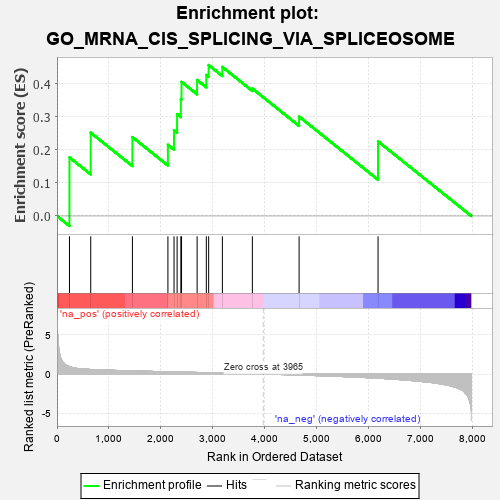

| | | Dataset | 7d |
| Phenotype | NoPhenotypeAvailable |
| Upregulated in class | na_pos |
| GeneSet | GO_MRNA_CIS_SPLICING_VIA_SPLICEOSOME |
| Enrichment Score (ES) | 0.4562373 |
| Normalized Enrichment Score (NES) | 1.2635821 |
| Nominal p-value | 0.20289855 |
| FDR q-value | 0.43558615 |
| FWER p-Value | 1.0 |
Table: GSEA Results Summary

Fig 1: Enrichment plot: GO_MRNA_CIS_SPLICING_VIA_SPLICEOSOME
Profile of the Running ES Score & Positions of GeneSet Members on the Rank Ordered List
| PROBE | GENE SYMBOL | GENE_TITLE | RANK IN GENE LIST | RANK METRIC SCORE | RUNNING ES | CORE ENRICHMENT | | 1 | SRSF9 | | | 240 | 0.950 | 0.1772 | Yes |
| 2 | RBM4 | | | 649 | 0.576 | 0.2517 | Yes |
| 3 | WBP11 | | | 1451 | 0.400 | 0.2384 | Yes |
| 4 | WBP4 | | | 2134 | 0.286 | 0.2152 | Yes |
| 5 | SRSF1 | | | 2252 | 0.267 | 0.2588 | Yes |
| 6 | SRSF4 | | | 2311 | 0.258 | 0.3079 | Yes |
| 7 | NCBP2 | | | 2383 | 0.248 | 0.3531 | Yes |
| 8 | RBM19 | | | 2396 | 0.246 | 0.4053 | Yes |
| 9 | SRSF3 | | | 2696 | 0.199 | 0.4111 | Yes |
| 10 | DCPS | | | 2873 | 0.170 | 0.4262 | Yes |
| 11 | RBM4B | | | 2918 | 0.163 | 0.4562 | Yes |
| 12 | RBM22 | | | 3182 | 0.125 | 0.4504 | No |
| 13 | SRSF2 | | | 3759 | 0.033 | 0.3851 | No |
| 14 | DDX23 | | | 4658 | -0.129 | 0.3004 | No |
| 15 | PSIP1 | | | 6177 | -0.531 | 0.2255 | No |
Table: GSEA details [plain text format]
Fig 2: GO_MRNA_CIS_SPLICING_VIA_SPLICEOSOME: Random ES distribution
Gene set null distribution of ES for GO_MRNA_CIS_SPLICING_VIA_SPLICEOSOME